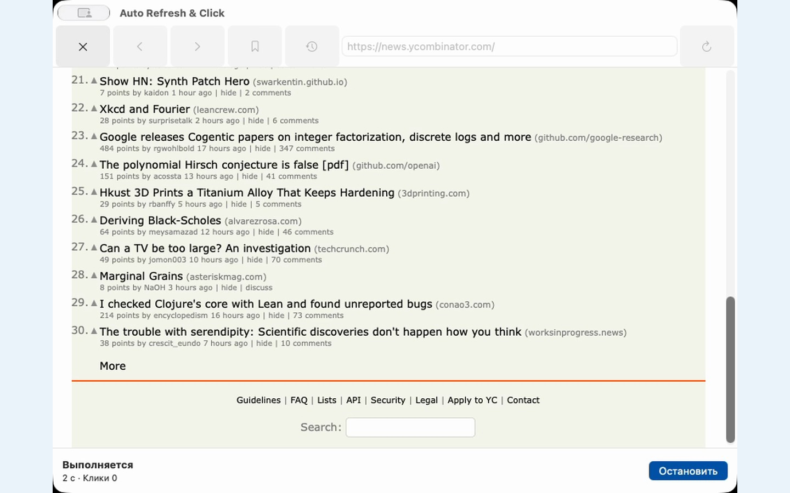

Автообновление
Выберите готовый или точный интервал, чтобы обновлять панели, запасы и страницы статуса.
Настроить автообновлениеОткройте список заказов из закладок, загрузите сохранённые шаги и нажимайте кнопку обновления списка по таймеру. Работайте в приложении или в расширении Safari.
Сохраняйте несколько сценариев с разными именами для одного полного адреса. Откройте тот же адрес, загрузите нужные шаги и проверьте их перед запуском. Сценарии остаются в приложении или браузере, где вы их сохранили.
Открыть руководство
Выберите готовый или точный интервал, чтобы обновлять панели, запасы и страницы статуса.
Настроить автообновлениеВыберите кнопку или ссылку либо введите её заголовок. После обновления шаги выполняются по порядку. Если кнопки пока нет, задача повторит этот шаг после следующей загрузки.
Настроить обновление и кликиНажимайте кнопку повторно без перезагрузки страницы. Подойдёт даже кнопка, на которой только значок.
Настроить повторные кликиiPhone / iPad · Mac
Установите и откройте приложение. Включите расширение в настройках Safari и разрешите доступ к нужному сайту.
Выберите режим и задайте интервал или паузу после каждого шага. Выберите кнопку или ссылку на странице либо введите её заголовок.
Запустите задачу и проверьте статус и обратный отсчёт. В любой момент её можно остановить или применить изменения.
Дайте закладке имя или откройте недавно посещённую страницу. История хранится на устройстве до удаления. Запись можно приостановить или очистить, сохранив закладки и сценарии.
КонфиденциальностьНа веб-страницах в приложении для iPhone, iPad или Mac либо во вкладках Safari с расширением. Для Chrome на компьютере есть отдельное расширение.
Укажите меняющуюся часть имени звёздочкой (*). Если подходят несколько кнопок, уточните шаблон.
Откройте установленное приложение хотя бы раз. Затем проверьте «Настройки Safari» → «Расширения». Нужна Safari 15.4 или новее. Если расширение не появилось, напишите в поддержку.
Измените настройки в расширении Safari и нажмите «Применить изменения». Текущие параметры видны в сводке. Чтобы завершить задачу, нажмите «Остановить».
Актуальные цены и совместимость указаны в магазинах.